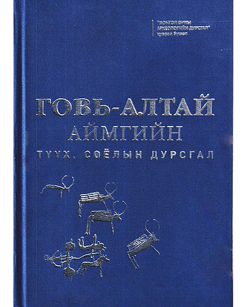

|  |
ДүгнэлтЭнэ номонд Монгол гэж хэн бэ, монгол хаанаас гаралтай вэ, монгол хүний мөн чанар зэргийг монгол эмэгтэйн ээдрээтэй амьдралын түүхээр дамжуулан маш сайхан харуулсан. Мөн тал нутгийн нүүдэлчдийн урт шуумагтай өмд, түрийтэй гутал нь одоогийн хувцасны эхийг тавьсан гэх сонирхолтой дүгнэлт энэ номонд бий. |
|---|
Гарах